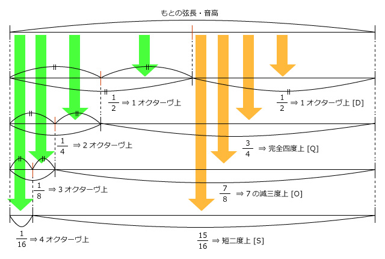

移動サの用語集：マ行
ア行 ｜ カ行 ｜ サ行 ｜ タ行 ｜ ナ行 ｜ ハ行 ｜ マ行 ｜ ヤ行 ｜ ラ行 ｜ ワ行 ｜ 数字・記号
マートラー（まーとらー：mātrā）（１）
音律の基準となる音程。ここでは「拡張移動サ」独自の定義。スヴァラ＝マートラー。
種類は以下の通り。上の４種が特に重要である。
・ドヴァイティーヤー ＜記号 [D] ／振動数比1：2／模式的セント値1200￠／カラー値106к＞
・チャートゥルティー ＜記号 [Q] ／振動数比3：4／模式的セント値498￠／カラー値44к＞
・アーシュタミー ＜記号 [O] ／振動数比7：8／模式的セント値231.5￠／カラー値20.5к＞
・シャウダシー ＜記号 [S] ／振動数比15：16／模式的セント値112￠／カラー値10к＞
・ドヴァートリンシャー ＜記号 [W] ／振動数比31：32／セント値約55￠／カラー値約5к＞
・ドヴァーダシー ＜記号 [U] ／振動数比11：12／模式的セント値151.5￠／カラー値13.5к＞
同じ長さの弦を同じ音高になるように複数張っておき、分割しない弦の音高を基準に、他の弦を駒で分割して音程を導き出す。[D]は、弦を左右同音となるよう2等分し、開放弦と１オクターヴの音程である。[Q](完全四度)は、開放弦と２オクターヴ差を作った残りの方の弦と、開放弦の間の音程。同様に[O](７の減三度)は、３オクターヴ差を作った残りの弦、[S](短二度)は、４オクターヴ差を作った残りの弦と、それぞれ元の開放弦との音程である。それぞれが比率の上で素数２・３・７・５の源となっており、７リミット純正律の音程の全てが、この４種類の組合せから導き出せ、それも整数倍の和と差による簡単な式で表わされる。例えば７リミット中三度は「2O-S」又は「D-Q-2O+S」で、351￠／31кとなる。

音度名としては、完全音程となる「サ・パ・マ」が[D]と[Q]のみから生み出され、長・短音程となる「ラ・リ・ギ・グ・ダ・ディ・ニ・ヌ」には[S]が加わり、増・減音程である「シ・ソ・ロ・ル・ガ・ゲ・モ・ミ・ポ・ピ・ド・ドゥ・ナ・ネ」には更に[O]が加わる。
各マートラーは、それぞれ「サ―サ」間（[D]）、「サ―マ」間（[Q]）、「サ―ガ」間（[O]）、「サ―ラ」間（[S]）の音程に相当する。これによって、南インドの音楽理論で72種の最初に挙げられる標準メーラである、メーラ＝カナカーンギー（拡張移動サ表記で「サラガマパダナサ」）の両アンガ（即ち「サラガマ」と「パダナサ」）を構成する音列が生まれる。この音列はクロマティック類である。
残るマートラーのうち、[W]は上と同様の手法で導出できるが、５オクターヴを出すには長大な弦が必要な上、実用性に乏しく、均等分割した１シュルティの音程を近似することに主な意味がある（オクターヴを平均で22分割した音程に近い）。「サ―ボ」間の音程（縮二度）に相当する。これを使って音列「サボギュマ」や「パゾニュサ」を生じるが、これらはエンハーモニック類に属する。
[U]は、素数11を導入し11リミットとするものである。先に一本の弦を、元の開放弦の完全五度上と完全十二度上（互いにオクターヴ差）に分割してから、もう一本の弦でその完全十二度の方の音の２オクターヴ上を割り出し、その残りの弦と、最初の開放弦との間の音程である。導出はやや厄介であるが、11リミットにした場合の重増・重減音程の音度名、それらと異名同音になるものが多い四分音音度名、そして多音度音階用拡張音度名の音程の設定に活躍する。[U]自体は、中二度音程として音度名「サ―バ」間、または重減三度音程として「サ―ギュ」間の音程。幾つかの中立音程では、７リミットより中心から離れるが、より単純な振動数比を提供する（中二度＝11：12、中三度＝9：11、中六度＝11：18、中七度＝6：11）。また例えば11リミット正６段は「2D-4Q+O+S-U」または「4Q-D-O-S+U」で、600￠／53кとなる。
なお、管楽器を吹く場合、何らかの基音から、同じ指使いを保ったままで、息の速さや角度を調節することにより、その倍音（部分音）を基音にした音を吹き上げることができる（＝管楽器における「ハーモ二クス」）。特定の指遣いでの最低音を仮に「サ」としたとき、管の内径がほぼ一定の開管の管楽器を仮定すると、その指遣いで出る音列は、低い方から順に「サ ― サ ― パ ― サ ― グ ― パ ― ドゥ ― サ' ― リ' ― グ' ― フォ' ……」のようになる。
この音列の中にも、「サ―サ」間の[D]、「パ―サ」間の[Q]、「ドゥ―サ'」間の[O]が含まれる。この方法で[S]を得ることは人間には無理であるが、実質的に[S]を含んだ音程は「サ ― グ」間に現れている。
マートラー（まーとらー：mātrā）（２）
「ターラ（拍節法）」に基づくリズム周期を構成する、拍の長さの基本単位。特に北インド古典音楽での呼び方。ラヤ＝マートラー。
ラグ（laghu・軽い）、グル（guru・重い）、プルタ（pluta・延ばされた）の３種が挙げられるが、この呼称は、韻文（詩）の韻律におけるものと同じである。
マールジャニー（まーるじゃにー：mārjanī）
インド音楽におけるシュルティ名で、音階基準音から上方に13番目の音程。原義は「浄化」または「刷毛・箒（＜拭うもの）」で、女性名詞。
音程幅は学説により、約21.5￠または約27.3￠。ジャーティは、マディヤー。
マダンティー（まだんてぃー：madantī）
インド音楽におけるシュルティ名で、音階基準音から上方に18番目の音程。原義は「喜んでいる・夢中になっている」の女性形。
音程幅は学説により、約70.7￠または約56.8￠。ジャーティは、カルナー。
マディヤマ（までぃやま：madhyama）
インドの伝統によるⅳ度音の音度名。「マ(M)＝スヴァラ」。スヴァラの一つ。
「中央の」の意味で、７つのスヴァラを順次数えるに当たり、中央の４番目に位置する。漢訳で「中令」「中婦」とも。
マンダー（まんだー：mandā）
インド音楽におけるシュルティ名で、音階基準音から上方に3番目の音程。原義は「緩慢な・微弱な・穏やかな」の女性形。
音程幅は学説により、約90.2￠または約37.2￠。ジャーティは、ムリドゥ。
ミーンド（みーんど：mīṃḍ / bending）
フレット付きの弦楽器で、演奏する弦を、押さえる指で引っ張り曲げて、音高を上げること。
インド音楽での用語。カナ表記は「ミード」とも。英語由来の用語ではベンディング、または日本の用語でチョーキングのこと。筝における押手とも同じ原理。
インド音楽では音程のポルタメント（スライド効果）のために多用され、楽器や音域によっても異なるが、三度から五度、大型の楽器ではオクターヴ近くも音を上げることがある。従って、押さえているフレットがどれであるかを見るだけでは、出している音高の推測が難しい。
ミクソリディア旋法（みくそりでぃあ・せんぽう：Mixolydian mode）
ヨーロッパ音楽の旋法名。ミクソリューディア旋法。ミクソリディアン。
教会旋法名としては、「第Ⅶ旋法」または「正格テトラルドゥス（tetrardus authentus）」と呼ぶ方がより正式で、ドレミでは「ソラシドレミファソ」でソが主音・レが軸音、拡張移動サでは「サリグマパディニサ」と表記できる。
古代ギリシアで用いられた名称としては、ドレミでは「シドレミファソラシ」、拡張移動サでは「サラギマポダニサ」、教会旋法でロクリア旋法と呼ばれるものに相当する。
なお、古典ギリシア語及び古典ラテン語では、'y'の母音は円唇前舌母音であったが、教会旋法命名当時の中世ラテン語では'i'と混同されていた。また、古典ギリシア語及び古典ラテン語では、三番目の音節'ly-'の母音'y'は長母音であったが、中世ラテン語では、母音の長短による語の区別は失われていた。
ムタツィオ（むたつぃお：mutation）
階名の読み替え。
イタリアでヨーロッパ式の階名が発明されたとき（11世紀）、今の「シ（Si）」（または「ティ（Ti）」）に相当する階名がまだなかったため、「ド（Do）」（当初は「ウト（Ut）」）から上方へオクターヴを歌うためには「ソ＝ド」と読み替えて「ドレミファソ（＝ド）レミファ」のようにしていた（その後、ルネサンス、バロック期にも行われた）。このように、６つの階名から成るヘクサコルドを用い、オクターヴに達する前にほぼ五度ごとに読み替えを行うことを、ムタツィオという。
基準となるヘクサコルドを「自然ヘクサコルド」、そこから四度上に移したものを「柔かいヘクサコルド」、逆に四度下に移したものを「硬いヘクサコルド」と呼んでいた。
因みに、西ヨーロッパでムタツィオの試みを始めるより千年以上も前から、インドでは７つの音度名が揃っていた上、曲の途中で主音の音高が変わることがなかったので、インド音楽史には該当する概念が存在しない。「ドレミ」は、現代でこそ全世界に通用するが、歴史上はもっと古い起源を持つ階名セットが複数存在していた。
メーラ（めーら：mela）
旋法のうち、周期性の音階に音度のみを定めた最も単純な形式のもの。本来、サンスクリットで「集合・集会」を意味し、訳して「音聚（おんじゅ）」とする。
形式的には、１オクターヴ周期で半音単位の７音ヴァラヤ６６種は全て、転回に対して非対称であるため、12半音単位で７音のメーラは、462種類存在し、それぞれに記号・番号及び表記がある（※１オクターヴ周期24四分音単位では403,788種類。そのうち標準的なアンガ構造に分析できるものは43,506種類。）。しかし音楽的な発展性はまちまちであり、その中の数種類だけで現代の楽曲の大半を占めているようである。
南インド音楽の体系では、基本のメーラ（ジャナカ＝メーラ（親旋法））は72種類数え挙げられており、それぞれに名前がある。その名前は、それぞれサンスクリットで意味を持ち、語頭から２つの音節に含まれる子音が表象する数字によって、名前を覚えていればその順序も思い出せるようになっている。
ア行 ｜ カ行 ｜ サ行 ｜ タ行 ｜ ナ行 ｜ ハ行 ｜ マ行 ｜ ヤ行 ｜ ラ行 ｜ ワ行 ｜ 数字・記号
（最終更新2013.10.12）